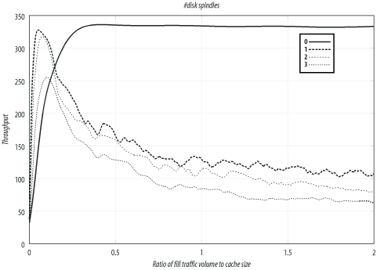

D.8 Number of Disk Spindles
In this section, I compare
Squid's
performance for different number of disk drives (spindles). These
tests are from the Linux system with the aufs
storage scheme and ext2fs filesystems.
Table D-6 and Figure D-6
summarize the results. The test with no disk drives has the best
throughput, but the worst response time and hit ratio. Note that
Squid does serve a few cache hits from memory, so the hit ratio
isn't zero.
Table D-6. Comparison of 0-3 disk spindles on Linux with aufs|
|
0
|
332.1
|
2.99
|
0.4
| |
3
|
109.6
|
1.44
|
56.2
| |
2
|
85.3
|
1.49
|
53.9
| |
1
|
66.0
|
1.50
|
53.5
|

The primary purpose of these tests is to show that
Squid's performance doesn't
increase in proportion to the number of disk drives. Excluding other
factors, you may be able to get better performance from three systems
with one disk drive each, rather than a single system with three
drives.
|